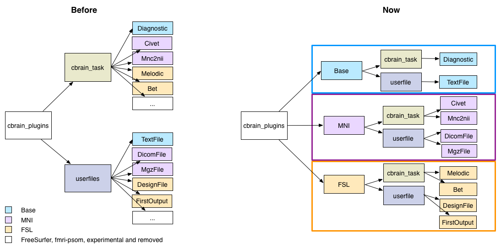
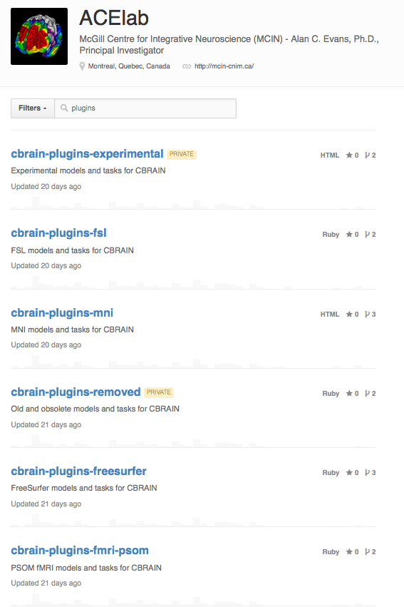

CBRAIN
How it became Open Source
Natacha Beck and Pierre Rioux
Little bit of history
- Created in 2008
- Developed as a service
- Web-based collaborative research platform
- Compute-intensive neuroimaging research
- Code and service were closely linked
Why?
- The CBRAIN paper was published in May 2014...
In it we promised that CBRAIN will be Open Source for mid 2014
- For grants
- Improve the visibilty
- External contributors
Our vision
- A generic platform
- Separate code base and service
- Easy to find and download
- Easy to install and understand
- Easy to contribute to
Implementation of our vision
- Cleaned dead code
- Updated key components
- Extracted specific CBRAIN plugins
- Extracted CBRAIN client APIs
- Removed service-specific files
- Improved installation
- Cleaned Git repository
- Added documentation
Cleaned dead code
- Removed JIV viewer
- Cleaned stylesheets
- Removed unused JavaScript
- Removed repository of outdated documentation
Why? To improve the readability of the code
Updated key components
- Ruby (2.2)
- Rails (3.2-stable)
- Testing suite (Rspec: 3.2)
- Volume viewer (2.3.0)
- Surface viewer (now using web-service)
Why? To avoid deprecation, security issue, follow the standard...
Extracted CBRAIN plugins
- Userfiles:
- Models that represent diferrent types of files
- E.g. TextFile, DicomFile, MgzFile...
- CbrainTask:
- Models that represent different types of task
- E.g. Diagnostic, Civet, Mnc2nii...
Note: It is not a specific file or task present into the service
Extracted CBRAIN plugins
- Prior to 2011 it were store in the traditional Rails location: app/models
- All the Userfiles and CbrainTask models come with CBRAIN
- First level of extraction: all the Userfiles and CbrainTasks where put in a subdirectory
Extracted CBRAIN plugins

Why? Packaged for easy download and installation, CBRAIN is no longer domain specific
Extracted CBRAIN plugins

Extracted CBRAIN plugins
cd /path/to/BrainPortal/cbrain_plugins
# will create 'cbrain-plugins-fsl/' here
git clone https://github.com/aces/cbrain-plugins-fsl.git
rake cbrain:plugins:install:all
Extracted CBRAIN client APIs
Why? CBRAIN and APIs was 2 differents project totally independant
Removed service-specific files
- Licenses (Term of services)
- Loris*DataProvider
- Online service documentation
Why? This part should not be part of the platform
Improved installation
- Removed unused library
- Fixed lots of deprecation warnings
- Tested installation on different systems
- Updated the documentation
Why? Should be easy to install/manage if we want new CBRAIN platform elsewhere and new contributors
Cleaned Git repository
- Used the bfg-repo-cleaner in order to:
- Cleaned history of extracted parts (plugins and APIs)
- Cleaned bad commits (e.g. big log files...)
- Deleted unused branches
Why? Should be done before the release or never
Reduce the size of Git repository
Added documentation
- Removed all the documentation files embedded in the code base
- Complete documentation in GitHub wiki
- Created README for CBRAIN and all sub-projects (APIs, plugins)
Why? Should be easy to understand what CBRAIN is, easy to install and used
Post Public Release
- More documentation added in wiki and code base
- Fixed some loose ends
Some lessons
- What could have been done to make it easier
- Early separation between the service and the code
- Early separation between the core of the platform what is optional
- Used wiki for documentation
- What was already well done
- APIs was already well encapsuled
- Already have a GPL licence
- Code base already well documented
- Used of Git and GitHub
And now...
- Domain independent
- People can create a new independent service
- Programmers can contribute to the main project
- Or to specific plugins, or create new one